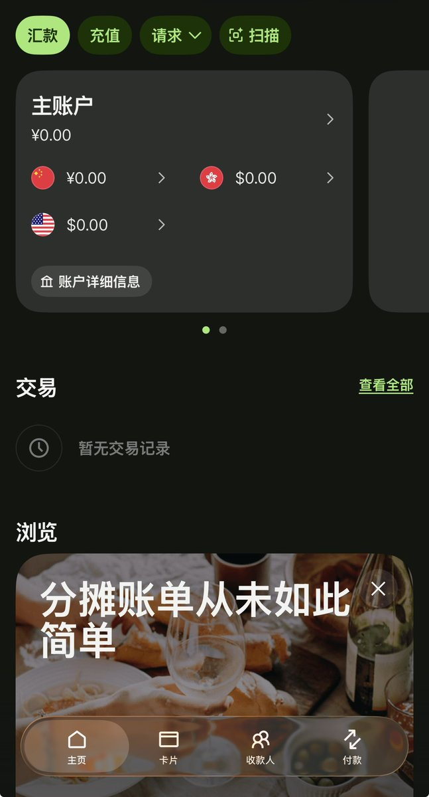

サイバー環状線
@CyberKanjousen
@WonderEchoview 環状線 Stripe 绑的就是 Wise

wonderfree
@WonderEchoview
费了多大的劲申请wise港币账户，一直没有通过。结果发现strip根本不接受wise这种虚拟账户😓白等了。还是只能用香港银行卡直接收取X创作者收益。现在大陆连在香港办理的股票账户炒境外股票都收紧了，不知道下一步会不会限制在香港开设银行账户了。果然是缺钱了啊，要开始抢钱了。 https://t.co/AJhxIjiR7Z